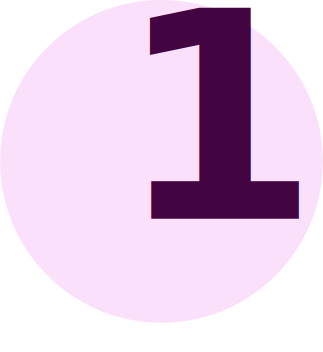
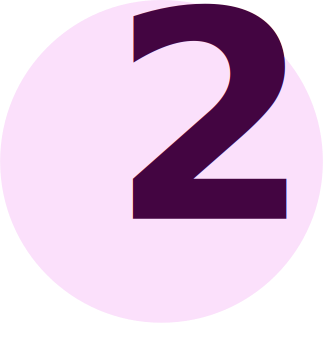
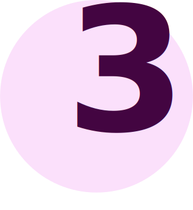

Tips & Tricks
Voor het eerst een moestuin starten is soms lastig, maar dat hoeft het helemaal niet te zijn. Wij hebben voor jou wat tips & tricks om het makkelijker en leuker te maken!
Lees het door en alvast veel succes met je moestuin!
- 
Weet wanneer je moet zaaien. Elke plant heeft een eigen seizoen. Neem een kijkje op onze kalender om dit makkelijk te zien.
- 
Zorg voor voldoende zonlicht. Klinkt misschien een beetje vanzelfsprekend, maar de meeste planten groeien het best met veel zonlicht. Zorg er dus voor dat je een goed zonnig plekje hebt gevonden voor je gaat planten.
- 
Begin klein. Een moestuin vraagt om veel aandacht. Het is beter en makkelijker om te beginnen met een paar eetbare planten en dan te gaan uitbreiden.
Makkelijke starters
Om het nog eenvoudiger voor je te maken, hebben we een aantal aanraders om mee te beginnen. Deze planten vragen om het minste aandacht, zodat je ook tijd overhoudt voor andere activiteiten.